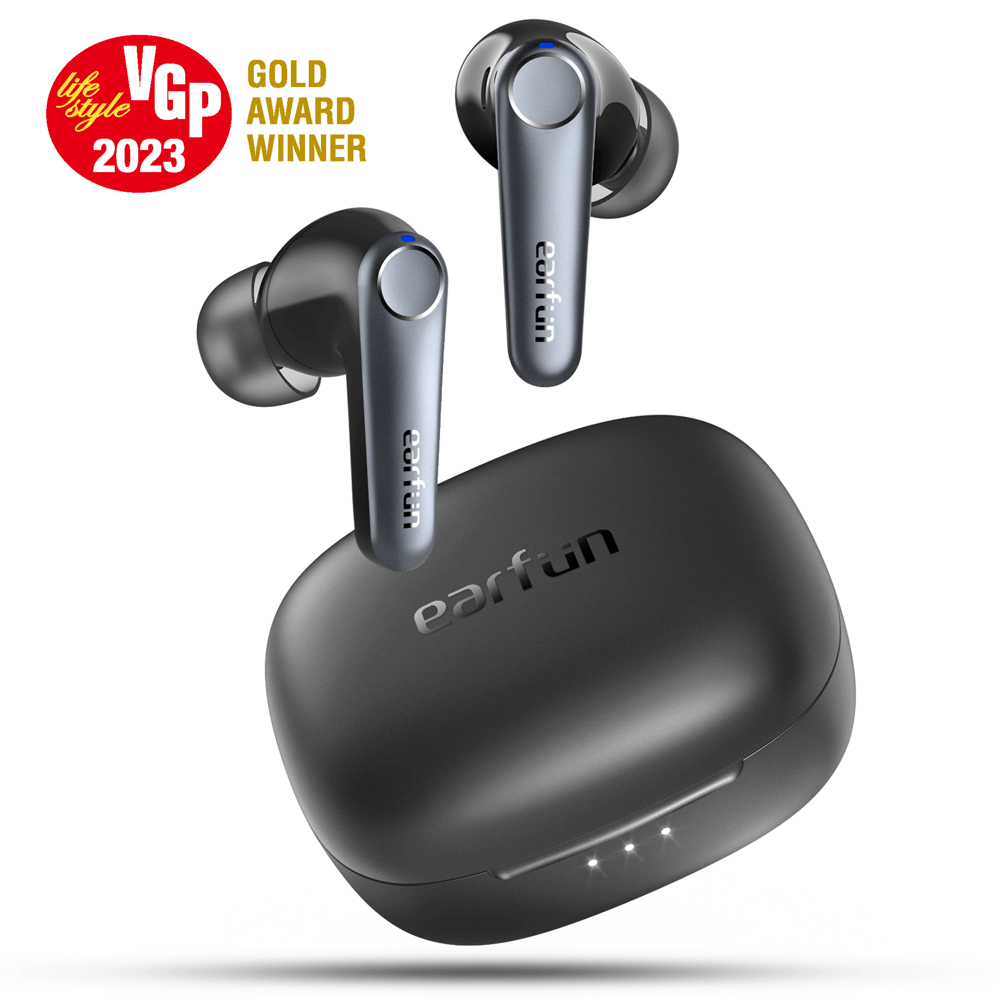

EarFun Air Pro 3: Features & Review
The EarFun Air Pro 3 true wireless earbuds are designed for comfort and convenience. They come with a small charging case that supports both USB‑C and Qi wireless charging, and the earbuds have short nozzles that make them easy to fit and comfortable to wear. With an IPX5 rating, they resist water jets and are suitable for workouts and light rain. EarFun equips the Air Pro 3 with Bluetooth 5.3 and a variety of audio codecs (AAC, SBC and aptX Adaptive) plus multipoint connectivity so you can connect to two devices simultaneously.
Battery life is above average at about six and a half hours per charge, and a quick 10‑minute charge provides roughly two hours of playback. Although the active noise cancellation (ANC) on these earbuds is not very strong, their isolation is reasonable and you can tweak the sound through an equaliser and game mode in the EarFun app. These features make the Air Pro 3 a versatile choice for daily use.